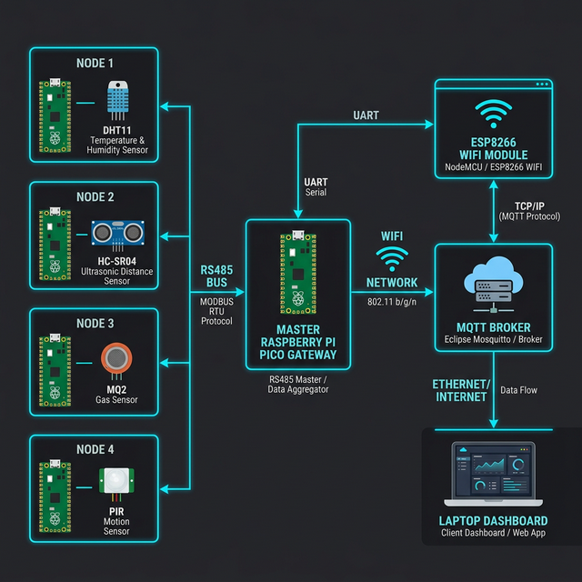

Mr. Anup G. Dakre
There is no lightweight, modular, and JSON-configurable multi-node IoT gateway framework that combines RS485 wired reliability with MQTT cloud connectivity — designed for microcontrollers.
RS485 is the industry standard for long-distance, noise-immune wired communication in factories and buildings
Raspberry Pi Pico offers a powerful dual-core ARM Cortex-M0+ at just ~$4, enabling scalable multi-node systems
Adding or swapping sensors should NOT require rewriting firmware — JSON config solves this elegantly
MQTT protocol provides lightweight publish-subscribe messaging — perfect for IoT dashboards & analytics
Existing libraries lack Hardware Abstraction Layers — making code non-portable across platforms
Bridges embedded systems, networking, and web development — a comprehensive full-stack IoT project
A modular, JSON-configurable, multi-node IoT gateway using Raspberry Pi Pico microcontrollers, RS485 wired communication, and MQTT for cloud connectivity.
One Pico as Master Gateway, multiple Picos as sensor Nodes — all connected via RS485 bus
Each node's sensor type, pin mapping, and polling interval defined in a JSON config at compile time
Browser-based tool auto-generates configJSON.h — no manual coding required
ESP8266 on Master Pico → publishes sensor data to MQTT broker → laptop dashboard
ISerial, IGPIO, ITime interfaces make the Gateway library platform-independent

RP2040 dual-core ARM Cortex-M0+, 264KB SRAM, programmable I/O
Master + NodesRS485 transceiver for half-duplex differential signaling up to 1200m
CommunicationWiFi module with AT command interface, connected via UART to Master
WiFi BridgeDigital temperature & humidity sensor, single-wire protocol
Sensor NodeUltrasonic distance sensor, 2cm–400cm range, trigger-echo interface
Sensor NodeDetects LPG, smoke, methane via analog output (ADC read)
Sensor NodePassive infrared for motion detection, digital HIGH/LOW output
Sensor NodeBreadboard, jumper wires, USB cables, 5V/3.3V power supply
Infrastructurevoid RS485Handler::sendData(const String& data) {
gpio->digitalWrite(dirPin, HIGH); // TX mode
delayMicroseconds(100);
serial->println(data);
serial->flush();
gpio->digitalWrite(dirPin, LOW); // Back to RX
}
String RS485Handler::receiveData(unsigned long timeout) {
gpio->digitalWrite(dirPin, LOW); // RX mode
unsigned long start = time->millis();
while (time->millis() - start < timeout) {
if (serial->available()) {
return serial->readStringUntil('\n');
}
}
return "";
}Instead of hardcoding sensor logic, each node reads its behavior from a compile-time JSON
config stored in configJSON.h. This enables:
// Auto-generated by Web UI Firmware Generator
#define CONFIG_JSON R"({
"nodeId": 1,
"role": "node",
"sensor": {
"type": "DHT11",
"dataPin": 15,
"pollIntervalMs": 2000
},
"rs485": {
"uartId": 0,
"txPin": 0,
"rxPin": 1,
"dirPin": 2,
"baudRate": 9600
}
})";#define CONFIG_JSON R"({
"nodeId": 1,
"sensor": { "type": "DHT11", "dataPin": 15 }
})";
iot/node/{id}/datavoid MQTTBridge::publish(uint8_t nodeId, const String& payload) {
String topic = "iot/node/" + String(nodeId) + "/data";
String mqttPacket = buildPublishPacket(topic, payload);
espSerial->println("AT+CIPSEND=" + String(mqttPacket.length()));
delay(100);
espSerial->print(mqttPacket);
// Wait for ESP8266 ACK
waitForResponse("SEND OK", 5000);
}Open firmware generator → select sensor type, pins, node ID → download
configJSON.h
Place configJSON.h in project → compile with Arduino IDE → flash to Pico via USB
Wire sensor to Node Pico → connect RS485 bus → attach ESP8266 to Master Pico
All nodes boot → Master polls each node in round-robin → nodes respond with sensor data
Open MQTT client / dashboard on laptop → see real-time sensor readings from all nodes
Deploy sensor nodes across farmland to monitor soil moisture, temperature & humidity in real time. Farmers receive alerts on their dashboard when irrigation is needed — reducing water waste by up to 40%.
Monitor gas leaks, machine vibrations & temperature across a factory floor. RS485's noise immunity makes it ideal for electrically noisy environments with heavy machinery.
Automate greenhouse climate control by monitoring temperature, humidity & CO₂ levels. The JSON config lets you swap sensors for different crops without touching the firmware.
Track temperature & motion across warehouse zones. Instant alerts when cold-chain thresholds are breached or unauthorized movement is detected after hours.
RS485 provides noise-immune communication up to 1200m — no WiFi dependency for node-to-master link
Entire system under $30 — Pico ($4) + MAX485 ($0.5) + sensors ($2-5 each)
JSON config model lets you swap sensors by changing a config file — no firmware rewrite
HAL + dependency injection = testable, portable, maintainable codebase
RS485 bus supports up to 32 nodes — add new nodes simply by flashing new Picos
MQTT integration enables dashboards, alerts, logging, and cloud analytics pipelines
Push new configurations over WiFi/MQTT without physical access to nodes
Run ML inference on Pico RP2040 for anomaly detection at the edge
Design a single PCB integrating Pico, MAX485, and sensor headers for production
Deploy to AWS IoT Core / Azure IoT Hub with Grafana dashboards and alerting
Add AES-128 encryption on RS485 frames and TLS for MQTT connections
"We designed and implemented a modular, scalable, and JSON-configurable IoT gateway using Raspberry Pi Pico microcontrollers that bridges RS485 wired reliability with MQTT cloud connectivity — featuring a custom C Gateway library with full hardware abstraction."
JSON-Driven RS485 Multi-Node IoT Gateway with MQTT Integration
Department of Electronics & Communication Engineering